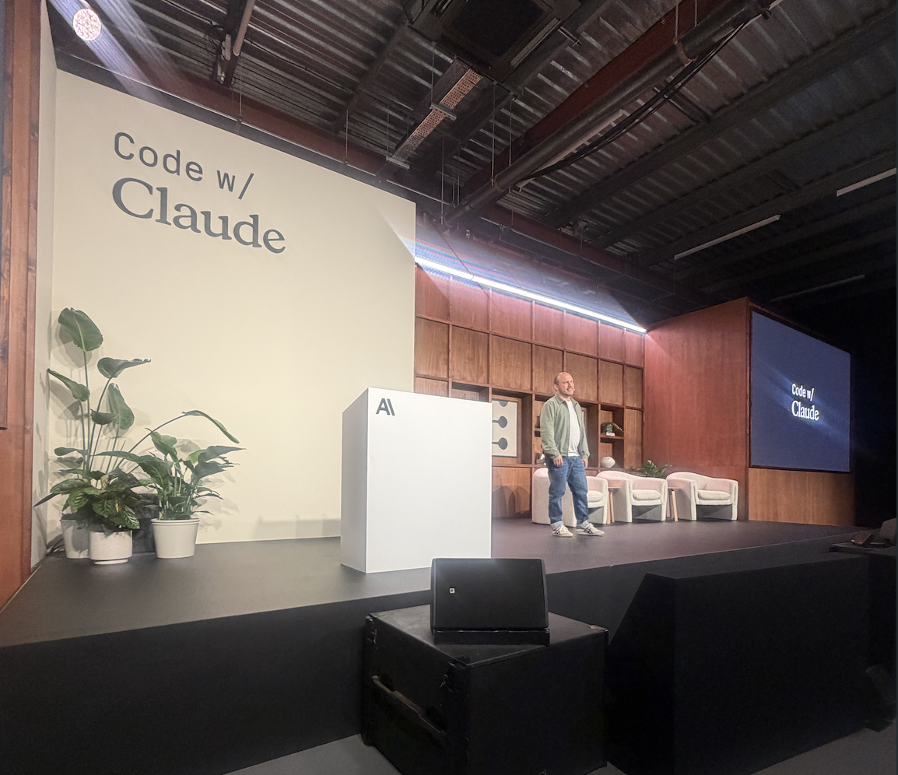
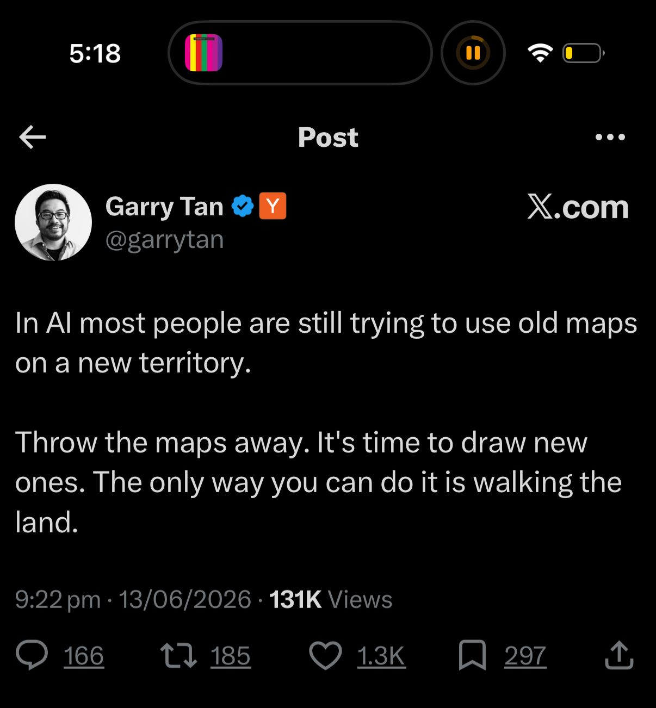

INSEAD AI Club · Event 03
Code with Claude, debriefed.
Freddie Chambers & Isabella Isotta
Monday 15 June 2026 · Amphi Rubeli
Code with Claude, debriefedINSEAD AI Club
Before we start
In one word: the most important skill for being good at AI?
Scan and drop your one word. We'll look at the room's answers - and come back to them at the end.
Scan to answer, or go to
insead-ai.github.io/event-three/poll
insead-ai.github.io/event-three/poll
Code with Claude, debriefedINSEAD AI Club
Why this matters now
Feeling behind isn't a skill gap. Even the people building this feel it.
"I've never felt this much behind... Clearly some powerful alien tool was handed around except it comes with no manual."
Andrej Karpathy, Anthropic
OpenAI co-founder. Ex-Tesla AI Director.
"I'm not going to stand up here and tell you I know exactly what's next, because I don't. No one does."
Boris Cherny, creator of Claude Code
On stage at Code with Claude, London.

Code with Claude, London - May 2026
Code with Claude, debriefedINSEAD AI Club
The pace, measured
How long a task can an AI finish on its own?
Doubles every few months.
Minutes a year ago. Hours today. Source: METR.
Code with Claude, debriefedINSEAD AI Club
The conference
A bit of context on the conference.
We went to Anthropic's builder conference - a day of talks from Anthropic's own builders and founders running real companies on Claude, pitched at people building at the frontier, not beginners.
Code with Claude, debriefedINSEAD AI Club
We spent a day with the people who build Claude
They run about $47bn a year on roughly 5,000 people.
Revenue per employee ($m, annualised)
Anthropic
$9.4M
~5,000 staffNvidia
$5.1M
OpenAI
$3.6M
Meta
$2.6M
Apple
$2.5M
Alphabet
$2.1M
Microsoft
$1.2M
Salesforce
$0.50M
ServiceNow
$0.46M
Amazon
$0.46M
Walmart
$0.34M
2.1m staffSo how do you run a company like that?
About 28x Walmart's revenue per head. Sources: Anthropic run-rate ÷ est. headcount (Series H, May 2026; ~5,000 staff). Public cos: latest 10-K. Run-rate is not realised full-year revenue.
Code with Claude, debriefedINSEAD AI Club
How they stay this lean
A closer look at the Claude culture.
Not the engineers you'd picture
Hats, creative-agency attire - the room was already dressed for it. The people pushing this hardest are creative, product-minded builders.
A subculture, not a conference
Anthropic stays lean while it grows, and its events team is elite - they build a subcommunity, not just host a day.
People love this product
Not adoption - love. A room full of people who have rebuilt how they work around it, swapping setups like collectors.
The product spreads itself - that is how you run $47bn on 5,000 people.
Code with Claude, debriefedINSEAD AI Club
The reveal
The people who build Claude Code
don't really write code anymore.
The engineers we spoke to brief Claude, set it running overnight, and review what comes back.
Fiona Fung, Head of Engineering for Claude Code: the work has shifted from writing code to reviewing it. If the frontier directs and checks rather than types, this was never about coding. It's management and communication.
Code with Claude, debriefedINSEAD AI Club
Takeaway 01 · The structure
The machine does the typing. You do everything else.
Ask & research→Plan→Build→Verify
The repeatable recipe at the frontier. The first and last steps do almost all the work - go deeper on context than feels natural.
Code with Claude, debriefedINSEAD AI Club
Takeaway 01 · The step almost nobody does
Give the work a checker.
"Give Claude a way to verify its work - this is the single highest-leverage thing you can do."
Anthropic Engineering. A separate AI with one job: check the output against what you said good looks like.
Code with Claude, debriefedINSEAD AI Club
Takeaway 01 · Keep the checker fresh
Fresh eyes beat long memory.
01When one AI checks another's work, start the checker fresh. No shared history, no anchoring.
02The same reason consultants are useful: they walk in without the baggage.
03Anthropic's name for the failure mode: "context rot". The more one conversation holds, the worse its recall gets.
Don't ask the author to mark their own homework.
In practice · off-stage
The freshest eyes are another model.
Verify against reality. Attendees leaned on a tool called Playwright - the checker drives a real browser and reports what is actually there, not what a rotting context window remembers.
Cross-check with a different model. Not mentioned on stage, but every attendee said it: run the important stuff past another model (Codex, GPT). It shares none of the first's blind spots.
When? High-stakes output, or when the first model sounds a little too sure of itself.
Code with Claude, debriefedINSEAD AI Club
Takeaway 01 · And you can make the checker automatic · Jiri De Jonghe, Anthropic
Turn the second opinion into a score.
Hard checks (images? font size?)→An AI judge on the look→A score you climb
A slide-making agent, graded automatically, iterated round after round until the score climbed. Verify scales - from a second opinion to a repeatable test. This deck was built this way; we'll show you live.
Code with Claude, debriefedINSEAD AI Club
Takeaway 01 · A checker in action · Max Tatton-Brown
One writes. One cuts.
The Writer
"You are a writer, not a template executor. You think in stories, not paragraphs."
Wants to produce. Defends its draft.
✦
Creative
tension
tension
The Editor
"You receive writing that is over-indulgent. You are here to kill their darlings."
Wants it true. Will cut.
↓
Outsized output. Higher quality than either reaches alone.
The tension is the quality. These are his actual prompts - and a human still signs off.
Code with Claude, debriefedINSEAD AI Club
Takeaway 01 · The shape is universal
Writing is just the example.
A maker and an adversarial checker. Never let the maker mark its own work. Swap the cast for your world - the friction stays.
Writing / commsWriter / Editor
CodeEngineer / Reviewer - "find the bugs and the edge cases"
A strategy memoAuthor / Red team - "make the strongest case against this"
A financial modelBuilder / Skeptic - "attack the assumptions"
Research / analysisAnalyst / Fact-checker
Code with Claude, debriefedINSEAD AI Club
Takeaway 02
The structure is easy. The skill is communication.
Anyone learns the four steps in five minutes. Give ten people the same steps and you get ten different results - the difference is how clearly each one says what they want. In the research step, the person who can articulate what they're after gets a far better answer. Nothing technical about it. (Adam Richardson teaches this first.)
Code with Claude, debriefedINSEAD AI Club
Takeaway 02 · From Anthropic's own training material
Say the goal, not the instructions.
"Is Claude doing the work right?"
"Keep it simple, don't over-engineer this."
What most of us type.
Code with Claude, debriefedINSEAD AI Club
Takeaway 02 · From Anthropic's own training material
Say the goal, not the instructions.
"Is Claude doing the work right?" "Is Claude doing the right work?"
"Keep it simple, don't over-engineer this." "This feature is an experiment. There's a real chance we delete it in a month. Don't build anything that would be painful to throw away."
Context, not constraints - the coding is already delegated; what's left is saying exactly what you want.
Code with Claude, debriefedINSEAD AI Club
Takeaway 03
Even the frontier disagrees with itself.
Same conference, opposite advice. One speaker plans for hours before a line gets built; another cut design-docs-before-code as theatre and prototypes first. Both work in their world. The lesson: steal the principle, not anyone's exact setup.
Code with Claude, debriefedINSEAD AI Club
Takeaway 03 · In their own words
Same question. Opposite answers.
Plan first.
Kevin Collins · founder, Echofold
Hours of planning before a single line gets built.
When to plan
→ vs ←
Prototype first.
Fiona Fung · Head of Eng, Claude Code
Her org cut design-docs-before-code as "theatre" - the doc, if needed, comes after.
Load all the context.
Kevin Collins
"I do the opposite" - every session starts "understand everything here".
How much context
→ vs ←
Keep context light.
The standard advice
Stay under 70%, /clear between tasks, never auto-compact.
Represent it in HTML.
Thariq Shihipar · Claude Code eng
"Almost no information Claude reads that you can't efficiently put in HTML."
Output format
→ vs ←
Markdown is enough.
The default
The format agents think in - plain, diffable, everywhere.
Same conference, opposite advice - and the frontier even disagrees with the standard playbook. Steal principles, not setups.
Code with Claude, debriefedINSEAD AI Club
Takeaway 04
“
We've taught our most sophisticated neural networks, trained on the sum of human knowledge, to make Hollywood films, explain string theory to a child in Sanskrit, and clone your voice.
Code with Claude, debriefedINSEAD AI Club
Takeaway 04
“
We've taught our most sophisticated neural networks, trained on the sum of human knowledge, to make Hollywood films, explain string theory to a child in Sanskrit, and clone your voice.
But it'll never crack PowerPoint, right?
Code with Claude, debriefedINSEAD AI Club
Takeaway 04 · The trap
We keep using new tools to do the old things slightly better.
Treating AI as a faster, cheaper pair of hands. But if we invented presentation software today, it wouldn't be PowerPoint - so work where it's actually fluent.

Code with Claude, debriefedINSEAD AI Club
Takeaway 04 · How fluently Claude speaks each format
Work where it is fluent.
01Mother tongueMarkdown, HTML, plain prose. Fluent and beautiful with almost no effort.
02Fluent second languageCode - .py, .js, .json, .sql. Trained on millions of repositories. Reliable.
03PhrasebookPowerPoint, Word, Excel. It thinks in markdown and translates at the end. Functional, not beautiful.
04Holiday phrasebookPDFs and images. Reads them well, produces them wobbly.
05ForeignVideo, audio, 3D. Wrong tool entirely - ask Runway, ElevenLabs, Figma.
Plan and build in plain text. Translate at the very end, if you must.
Code with Claude, debriefedINSEAD AI Club
Takeaway 04 · And the native language, if we started today
The unreasonable effectiveness of HTML.
"There is almost no set of information that Claude can read that you cannot efficiently represent with HTML."
Thariq Shihipar, Anthropic
This deck is a web page.
Read the post
claude.com/blog · Thariq Shihipar
claude.com/blog · Thariq Shihipar
The catch · a culture call
The last mile is hand-work.
An HTML deck is brilliant to about 90%. The final 10% - nudging a box that sits slightly wrong on slide 40 - is fiddly, by hand.
So it's a culture choice. Anthropic's is "90% good enough is good enough." Could you tell a Bain consultant to ignore a wonky box on slide 40?
Code with Claude, debriefedINSEAD AI Club
A practical walk-through · 2,740 applications, one role, 24 hours (Metaview)
The thing reading your CV is an AI. Model it.
I want to apply for this job. Before I do
anything - based on how application-review
systems like Metaview's work, build me the
ideal candidate profile this role is
screening for.
[paste the job spec]
anything - based on how application-review
systems like Metaview's work, build me the
ideal candidate profile this role is
screening for.
[paste the job spec]
What comes back - extract
Role: Strategy Manager, AI products
3-5 yrs in B2B SaaS or consulting - has shipped with AI tools, not just used them
Owned a number: a P&L, a pipeline, a portfolio
Writes clearly. The CV itself is the writing sample
This recruiter's taste: operators over researchers
3-5 yrs in B2B SaaS or consulting - has shipped with AI tools, not just used them
Owned a number: a P&L, a pipeline, a portfolio
Writes clearly. The CV itself is the writing sample
This recruiter's taste: operators over researchers
The whole loop on your job hunt: model the screener (ask & research) → the profile is your target (plan) → rewrite your story backwards (build) → a fresh agent scores the gap (verify).
Watch the talk
Code with Claude, debriefedINSEAD AI Club
Switching gears
Now let's step back.
That's the toolkit you can apply directly to your own work. Now let's zoom out and think about where this is all going in the world of work.
Code with Claude, debriefedINSEAD AI Club
Where does this go
On the face of it, the oldest pattern in economics.
Cheap capital takes the low-value work. People move up. Steam, computers, and now AI.
Code with Claude, debriefedINSEAD AI Club
Where does this go
But this time it might be different.
Every tool before
Specialised. We were the ones inventing the new work.
AI
General, and self-improving. It could make humans obsolete.
Nobody knows which: AI does it all (from utopia to extinction) · humans keep their edge · or it spreads too slowly to matter for decades. They only disagree on the long run; all agree the human edge is real now.
Code with Claude, debriefedINSEAD AI Club
So what do we do
So optimise for what we can know.
The long run is a write-off. But there are two things we actually can know.
Code with Claude, debriefedINSEAD AI Club
What we can know
First, what's valuable now.
01Judgement & tasteDeciding what's worth doing, and whether it's any good.
02Communication & relationshipsGetting the goal across, to people and to the machine.
03Business & industry senseKnowing the market the work is for.
The short-run human edge. None of it technical.
Code with Claude, debriefedINSEAD AI Club
What we can know
Second, capability is far ahead of diffusion.
Capability
Racing. Exponential.
- The task length it handles on its own doubles every few months.
- Already good enough for a growing share of knowledge work.
Diffusion
Slow. Hard. Human.
- From can to actually doing the work: a gap of years, not months.
- The PC took ~20 years to go from essential to everywhere - release, regulation, training, trust.
Diffusion is where the value is stuck - so being one of the few who actually moves fast is the edge. Start things, build, drive adoption ahead of the pack.
Code with Claude, debriefedINSEAD AI Club
The point
You have to be technical to be good at AI.
The real skills are judgement and communication, influence and change. Exactly what an MBA teaches.
Point judgement and communication at the AI, to direct it. Point influence and change at the organisation, to drive adoption. Manage the machine, and manage its adoption.
Scan: has tonight changed your mind? Tell us Yes or No - and your one word now. We'll put the room's start vs end on screen.
insead-ai.github.io/event-three/changed
insead-ai.github.io/event-three/changed
Code with Claude, debriefedINSEAD AI Club
The takeaway
Live in the moment. Be adaptable. Run the loop.
Research→Plan→Build→Verify
Two ways to think, one thing to do. The window is open now.
Code with Claude, debriefedINSEAD AI Club
Take home · who to follow
Don't read everyone. Pick two or three.
01 · If you only pick one
Ethan Mollick
One Useful Thing. The one to follow.
Benedict Evans
Strategy lens. Weekly.
Simon Willison
Daily log of what's possible.
Andrej Karpathy
First principles, built intuition.
Dario Amodei
Where the frontier's heading.
Dwarkesh Patel
Long-form interviews. Best signal-to-noise.
Azeem Azhar
AI x geopolitics x economics.
Daily and builders
Thariq Shihipar
Anthropic. The HTML line tonight is his. @trq212
The Rundown
Daily newsletter. Top-of-funnel scan.
Zvi Mowshowitz
Don't Worry About the Vase. Weekly roundup.
Carl Vellotti
Claude Code for PMs course.
Riley Brown (YouTube)
Hands-on AI tooling.
Greg Isenberg (YouTube)
AI x startups.
Code with Claude, debriefedINSEAD AI Club
Go deeper · scan, or grab them all in the WhatsApp
If you want to read further.
The method & the agents

Building effective agents
Anthropic Engineering

Emotion concepts in an LLM
Anthropic (agent personality)
The world of work

From Hierarchy to Intelligence
Block / Jack Dorsey

Salarymen, specialists, small businesses
Noah Smith, Noahpinion
The long run

When AI builds itself
Anthropic

My AI Opinions
Scott Alexander, ACX

AI as Normal Technology
Narayanan & Kapoor
Building effective agents is the technical one: paste it into Claude and ask it to explain, and how the principles help a task you actually have.
Code with Claude, debriefedINSEAD AI Club